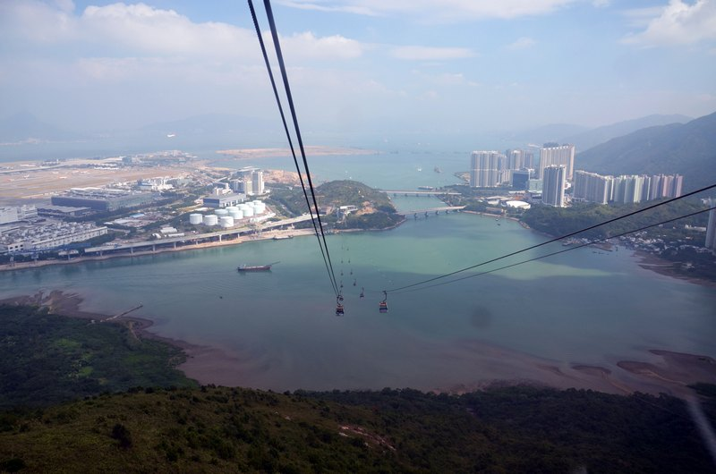
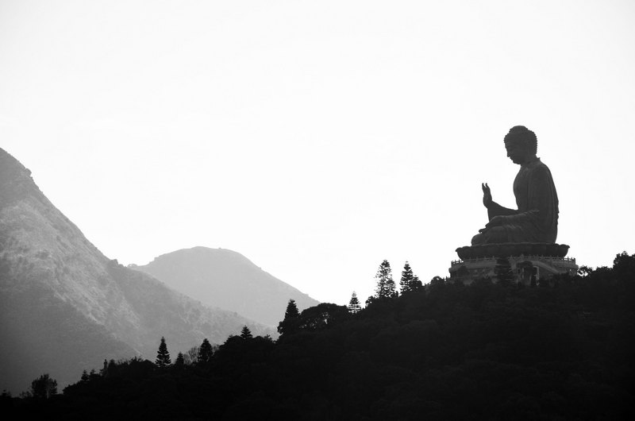
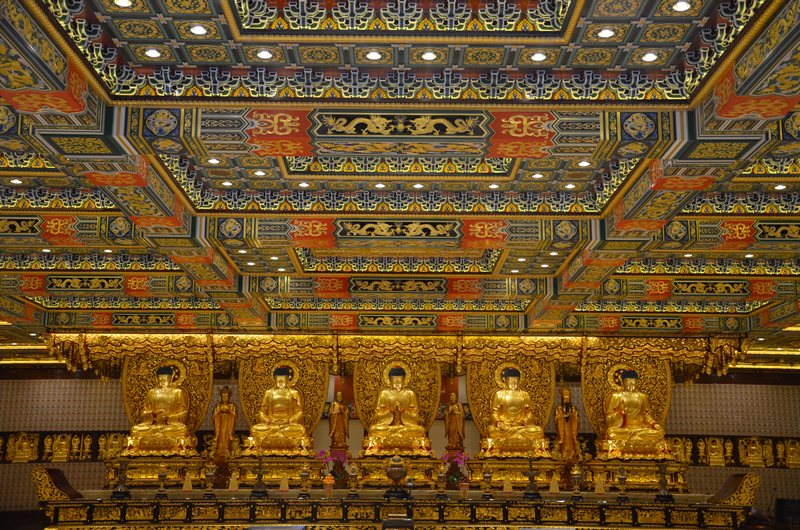
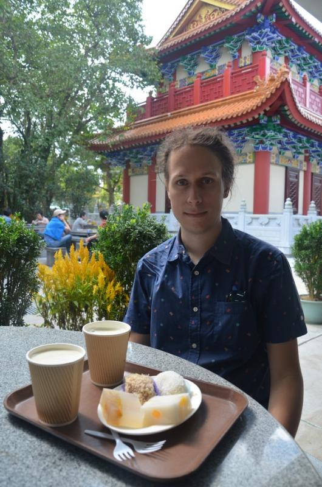
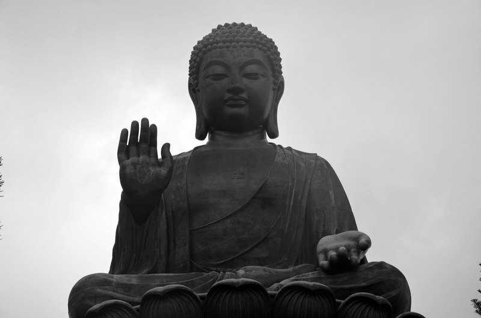
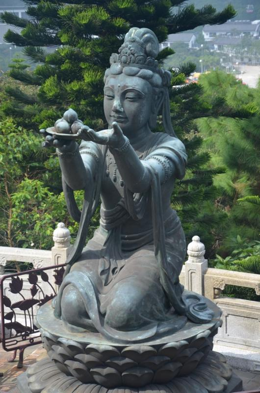
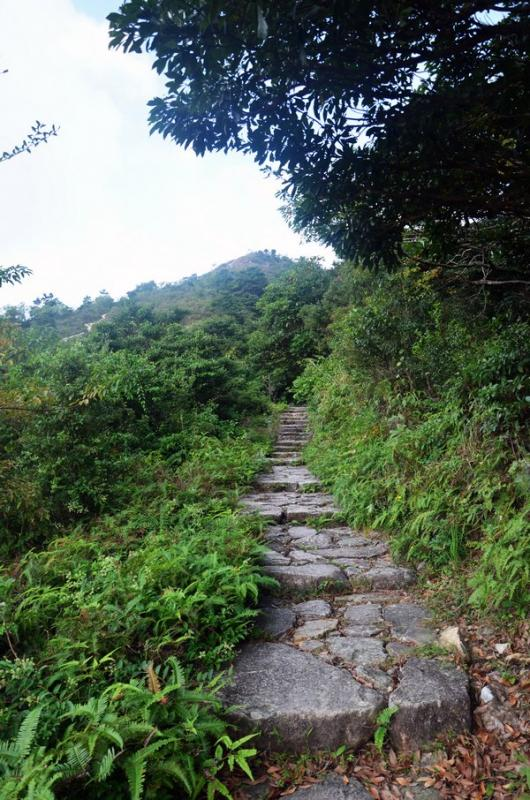
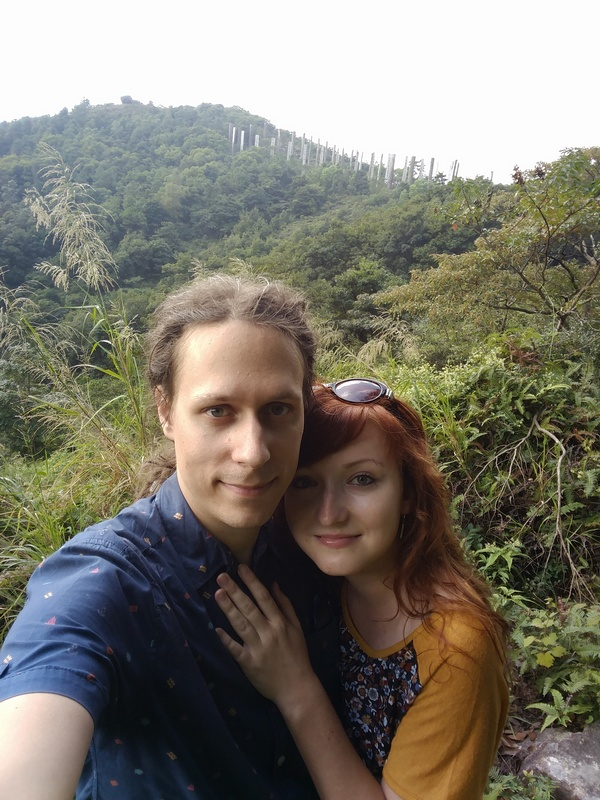
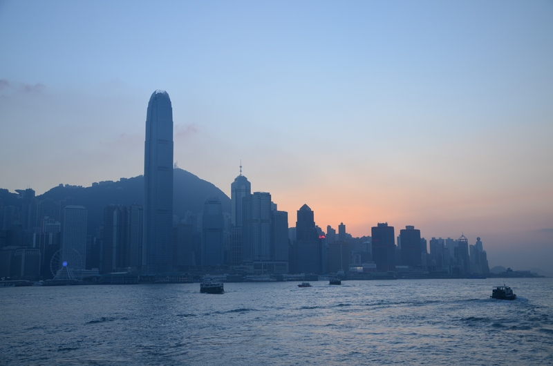
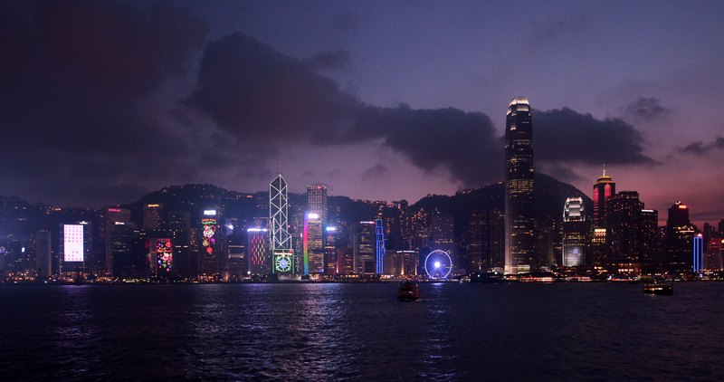

Po dnu stráveném v srdci zalidněného Hong Kongu jsme zatoužili vrátit se na chvíli zase někam do přírody a okusit jeho klidnější stránku. Proto jsme v neděli vyrazili na největší z vnějších ostrovů Hong Kongu - Lantau.
Lantau má téměř dvojnásobnou rozlohu než ostrov Hong Kong, přesto je řídce osídlen. Najdete zde oblasti krásné nedotčené přírody - více než polovina povrchu ostrova je chráněným krajinným parkem. Lantau je zpravidla také tím prvním, co turisté z Hong Kongu vidí - nachází se zde totiž obrovské letiště.

Lanovkou na Lantau
Z centra se sem dopravíte poměrně pohodlně - nejprve na konečnou metra Tung Chung a odsud už vás vzhůru do kopců vyveze lanovka. Výhled je to opravdu překrásný - a co teprve když v dálce spatříte působivou sochu Tian Tam Buddhy, která je se svou výškou 23 metrů nejslavnější dominantou ostrova!

Buddha nás vítá už z dálky.
Naše první kroky však vedly směrem k místnímu duchovnímu útulku, klášteru Po Lin.

Klášter Po Lin
Na výstup schodů ke gigantické soše Buddhy jsme se pochopitelně museli posilnit. K tomuto účelu jsme vyhledali sympatickou restauraci/cukrárnu vedle kláštera, kde jsme si dali naše oblíbené sojové mléko a několik lákavě vyhlážejících zákusků s ovocem a agarovým želé.

Dezerty po asijsku
A pak už jsme se tedy vydali zdolat tu pěknou řádku schodů, které nás dělily od Buddhy…

Tian Tam Buddha

Na vrcholku
Na Lantau vede také řada hezkých turistických stezek, a tak jsme se po sestupu dolů rozhodli vydat ještě na krátkou procházku k “Path of wisdom”, což je cesta lemovaná dřevěnými kůly s vytesanými moudry. A na jedné z okolních opuštěných stezek se odehrál ten významný moment, kdy mě Péťa požádal o ruku. A já řekla…

Tak tady se to celé seběhlo…
…ANO :)!! Dozvěděla jsem se, na kolika dalších místech, které jsme během dovolené navštívili, to původně mělo proběhnout (pagoda Tsen nebo při západu slunce na pobřeží v Lukangu), ale z různých dovodů to krachlo (neočekávaná přítomnost Mendy či mimořádně hnusné pobřeží plné odpadků :D). A taky že zásnubní prsten byl přede mnou velmi důmyslně ukryt v brašně od foťáku :-D!

Just engaged :)
Po návratu z Lantau jsme si chvíli odpočinuli “na hotýlku” a v podvečer zamířili na pobřeží do čtvrti Tsim Sha Tsui, odkud jsme chtěli sledovat světelnou show, která každý večer za doprovodu hudby rozsvítí mrakodrapy ostrova Hong Kong.

Podvečer v Tsim Sha Tsui
Několikaminutová light show je působivá a turisty přitahuje natolik, že už dlouho před jejím začátkem je pobřěží v Tsim Sha Tsui obsypáno fotoaparáty. Na druhou stranu to ale podle mě není nic, co byste si v Hong Kongu nemohli nechat ujít.

Hong Kong se rozsvěcuje…
Po skončení light show jsme se rozhodli oslavit naše zasnoubení nějakou dobrou večeří. Chvilku jsme hledali a bloudili, ale nakonec jsme objevili příjemný podnik se sympatickým názvem " Relax for a while", který se nacházel nedaleko našeho bytečku v Kowloonu. Naše “zásnubní menu” tvořila vynikající smažená rýže s chobotnicí a ještě lepší, byť trochu pikantní polévka :). Nad večeří jsme pak plánovali naše dva zbývající dny dovolené, které měly přinést ještě spoustu zážitků… ;-)
Komentáře (2)
Komentáře jsou uzavřené.